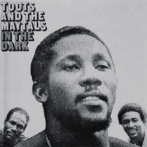

Tonality in reggae music is usually clear and stable, often centred around major keys which help create a relaxed, uplifting, and positive mood. Reggae songs commonly remain in the same key throughout, with very few complex modulations or sudden key changes. Melodies, basslines, and chord progressions are usually built using notes from the same scale, helping the music sound balanced and consistent. The strong tonal centre also supports the repetitive nature of reggae music, making the groove feel steady and grounded.